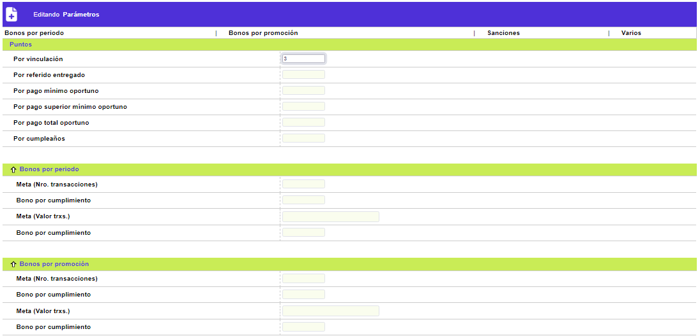
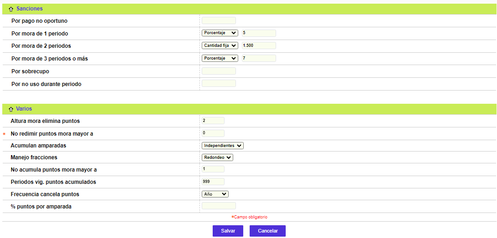

Esquemas de puntajes - Parámetros
Parametros: Grupo de campos en los que se definen los valores de los parámetros que facilitan el control y administración de los puntos de acuerdo con el esquema diseñado por la entidad.
A través de los botones Salvar o Cancelar, se regresa al formulario principal de Esquemas de puntajes.

Puntos: En este bloque de información se deben ingresar los parámetros correspondientes a los conceptos o eventos generadores de puntos a favor de los tarjetahabientes.
|
Por vinculación |
Campo en el que se define la cantidad de puntos que otorga el sistema al momento en que el cliente sea ingresado en la entidad como cliente nuevo activo, siempre y cuando el producto a través del cual se vincula, se encuentre parametrizado en este esquema. |
|
Por referido entregado |
En este campo se registra la cantidad de puntos que el sistema otorga a cada cliente, cuando les sean aprobados y entregados los productos a clientes potenciales cuya información haya sido proporcionada a la entidad por el cliente activo. Tanto los productos del nuevo cliente como del cliente activo que lo refiere deben pertenecer a esquemas vigentes. |
|
Por pago mínimo oportuno |
Campo que permite definir la cantidad de puntos que acumula el cliente en el momento que realice los pagos mínimos correspondientes, dentro de la fecha límite establecida, de acuerdo con la información contenida en la opción Datos de la tarjeta. |
|
Por pag superior mínimo oportuno |
En este campo se registra la cantidad de puntos que acumula el cliente en el momento que realice abonos que excedan el pago mínimo exigido por la entidad, siempre y cuando se realicen dentro de la fecha límite establecida, información contenida en la opción Datos de la tarjeta. |
|
Por pago total oportuno |
Campo en el que se digita la cantidad de puntos que acumula el cliente, en el momento que efectúe pagos correspondientes al saldo total de la deuda, siempre y cuando se realicen dentro de la fecha límite estipulada, de acuerdo con lo parametrizado en la opción Datos de la tarjeta. |
Bonos por período: Este conjunto de campos permite registrar los parámetros para otorgar puntos adicionales, independientes a los generados por otros conceptos, y que se acumularán al saldo de puntos que del cliente, siempre y cuando los consumos efectuados dentro de cada período superen los montos y/o cantidades de transacciones aquí señaladas. El sistema evalúa tanto la vigencia del esquema para acumular los puntos hasta el momento de expiración del mismo, como el otorgamiento de los mismos por monto, por valor o ambos.
|
Meta (Nro. transacciones) |
Campo que contiene la cantidad de utilizaciones o consumos que debe realizar el cliente durante cada periodo para hacerse acreedor a los puntos indicados en el campo siguiente. |
|
Bono por cumplimiento |
Este campo contiene la cantidad de puntos que se acumularán, por periodo, una vez cumplida la meta de número de transacciones requeridas para su aplicación. |
|
Meta (Vr. transacciones) |
Campo en el que se parametriza el valor o monto de los consumos que se deben realizar durante el periodo para hacerse acreedor a los puntos indicados en el siguiente campo. |
|
Bono por cumplimiento |
En este campo se registra la cantidad de puntos que se acumularán una vez cumplida la meta de valor de las transacciones requeridas para su aplicación. |
Bonos por promoción: Espacio destinado para registrar los parámetros de puntos adicionales respecto a los ya generados por otros conceptos, que se acumularán por una sóla vez, de acuerdo con los consumos realizados dentro de un período de operación, expresado en términos de la vigencia del esquema.
|
Meta (Nro. transacciones) |
Campo en el que se parametriza la cantidad de operaciones que se deben realizar durante la vigencia del esquema para que aplique la acumulación de puntos. |
|
Bono por cumplimiento |
En este campo se debe registrar la cantidad de puntos que se acumularán una vez cumplida la meta de transacciones requeridas para su aplicación. |
|
Meta (Vr. transacciones) |
Campo que permite parametrizar la sumatoria o el monto a acumular para las operaciones que se deben realizar durante la vigencia del esquema para que aplique la acumulación de puntos. |
|
Bono por cumplimiento |
En este campo se debe registrar la cantidad de puntos que se acumularán una vez cumplida la meta de valor de las transacciones requeridas para su aplicación. |

Sanciones: Conjunto de campos en los que la entidad parametriza la cantidad de puntos a deducir del acumulado disponioble del cliente cada vez que el sistema, al día de facturación, detecte que el producto del cliente ha incurrido en cualquiera de los eventos relacionados. Se debe tener especial cuidado en los valores aquí parametrizados, dado que al igual que sucede con los bonos por periodo, estas multas o sanciones en puntos se causarán en cada proceso de facturación, independientemente que el evento haya ocurrido durante el periodo anterior o subsiguientes.
|
Por pago no oportuno |
Campo en el cual la entidad define los puntos a descontar cuando el cliente no cumpla con los abonos mínimos exigidos dentro de la fecha límite destinada para ello. |
|
Por mora de un periodo |
En este campo se registran los puntos a descontar cuando el cliente presenta mora de un periodo (30 días), es decir, que no cumpla con los pagps mínimos exigidos por la entidad al momento de la facturación. |
|
Por mora de 2 periodos o más |
Campo en el cual se definen los puntos a descontar cuando el cliente presenta mora de dos o más periodos (de 30 días cada uno) consecutivos, es decir, que no se hayan efectuado los abonos mínimos exigidos por la entidad al momento de la facturación. |
|
Por sobrecupo |
En este campo se determinan los puntos a descontar al cliente, si al momento de ejecución del proceso, los consumos realizados por él han excedido el cupo autorizado, generado el estado de sobrecupo. |
|
Por no uso durante periodo |
Campo en el cual la entidad define los puntos a descontar cuando el cliente no haya efectuado consumos durante el periodo. |
Varios: Conjunto de campos que contienen otros parámetros relacionados con la cancelación o pérdida de los puntos bien sea por expiración o por exceder una determinada altura de mora, entre otros. Es importante tener en cuenta que en la opción Estados y bloqueos del Núcleo, se han definido dos de los parámetros aquí contenidos prevaleciendo los allí señalados.
|
Altura mora elimina puntos |
En este campo se define la altura de mora o edad de vencimiento de la cartera (expresada en número de periodos) a partir de la cual se eliminarán todos los puntos acumulados por el cliente, por esta causal, y que toma en cuenta el parámetro ingresado previamente en el campo Por mora de 2 períodos o más del bloque sanciones, de manera que si en él se ha registrado algún valor, el parámetro para el presente campo debe estar expresado para una altura de mora mayor a 2 periodos. |
|
No redimir puntos mora mayor a |
Campo en el cual se determina la edad de mora o vencimiento de la cartera (expresada en número de periodos) a partir de la cual el sistema suspende la acumulación de puntos al cliente, hasta tanto no se normalice el estado de la obligación. Este campo está expresado en términos de periodos de maduración de la cartera del cliente. |
|
Acumulan amparadas |
Campo que cuenta con lista de valores de la que la entidad puede seleccionar la manera como se acumularán los puntos de las tarjetas amparadas y extendidas. Las opciones que presenta son: Sólo principal, Independiente o Ambas. Cuando el parámetro indique sólo principal, significa que todas las transacciones que realicen los productos amparados (y extendidos) acumularán puntos al cliente principal exclusivamente, es decir quien ampara dicho producto. Si la opción escogida es independiente indica que los puntos obtenidos a través de los productos amparados y extendidos, se acumularán de manera separada para cada tarjeta. Sin embargo, cuando el parámetro se defina como ambas, los puntos generados por las transacciones que se realicen con los productos con características de amparados y extendidos serán compartidos con el principal, en la proporción definida en el campo % puntos por amparada de esta opción del menú. |
|
Manejo fracciones |
Campo en el que la entidad selecciona, de la lista de valores adjunta, entre Truncar o Redondeo el tratamiento que le dará a las fracciones resultantes de los cálculos porcentuales sobre los puntos y aplica igual cuando los productos amparados comparten puntos al principal ó para la liquidación del total de puntos obtenidos por una transacción al pasar por los conceptos o niveles activados, establecimiento, grupo, cadena y/o tipo de servicio. |
|
No acumulan puntos mora mayor a |
Campo en el cual se determina la edad de mora o vencimiento de la cartera (expresada en número de periodos) a partir de la cual el sistema suspende la acumulación de puntos al cliente, hasta tanto no se normalice el estado de la obligación. Este campo está expresado en términos de periodos de maduración de la cartera del cliente. |
|
Periodos vigencia puntos acumulados |
Campo en el que se define la vigencia o cantidad de períodos de los que dispone el tarjetahabiente para redimir los puntos acumulados por el manejo de su producto; opera en combinación con el valor del campo Frecuencia cancela puntos. |
|
Frecuencia cancela puntos |
En este campo se determina la frecuencia con que se anularán los puntos que no fueron utilizados durante el lapso de tiempo aquí señalado. Si la entidad selecciona de la lista de valores la opción Todo, indica que el total de los puntos acumulados y no utilizados durante la vigencia de los mismos, señalada en el campo Periodos vigencia puntos acumulados, serán eliminados, es decir que esos puntos estarán vigentes únicamente por el lapso de tiempo indicado en el campo anterior. La opción Periodo indica que eliminará la totalidad de los puntos acumulados durante el periodo uno y que no hayan sido utilizados, de igual manera, si el parámetro se define como Año, significa que cancela los puntos acumulados hasta el último día hábil del año uno que no hayan sido utilizados y así sucesivamente. |
|
% Puntos por amparada |
Este campo le permite a la entidad definir, en términos de porcentaje, la proporción de puntos que serán acumulados al cliente principal por concepto de las transacciones efectuadas por los clientes amparados. Con base en lo anterior, el valor determinado en este campo, expresado en puntos porcentuales, se asignará al cliente principal; la diferencia con la cual se completa el 100%, si llegare a existir, corresponderá a la porción de puntos que le pertenecen a la tarjeta amparada o extendida con que se hizo el consumo. |